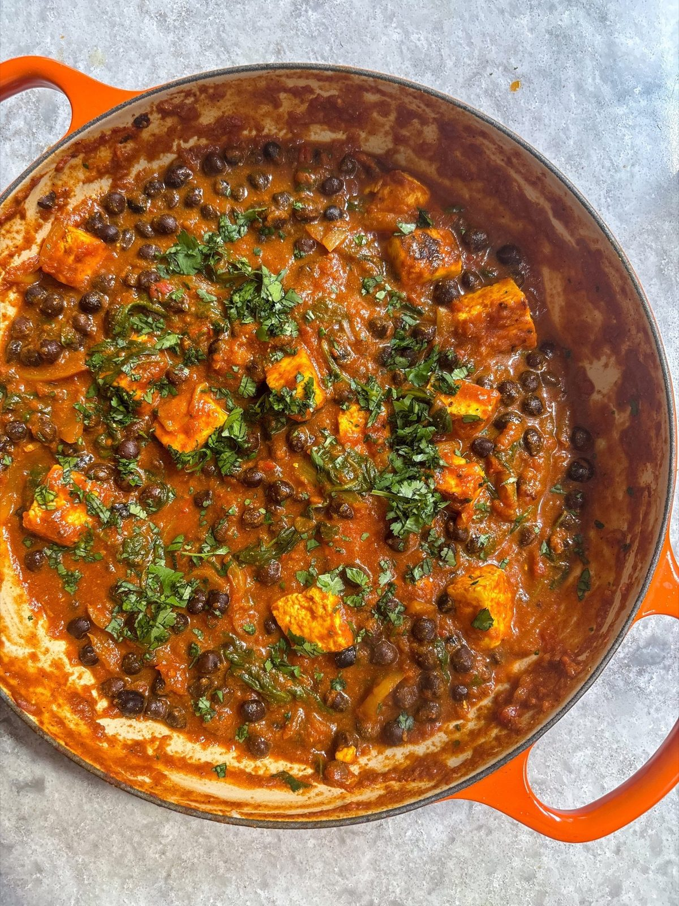

Black Chickpea + Paneer Curry
A spiced tomato curry of black chickpeas and fried paneer, finished with spinach, yoghurt and mango chutney.

Ingredients
To serve
Method
- Heat 1 tbsp of the 3 tbsp oil in a deep frying pan over a medium-high heat.
- Add the 226g paneer and fry for 5 minutes, turning regularly, so each side is golden brown.
- Lift the paneer out with tongs onto a plate lined with kitchen paper.
- Heat the remaining 2 tbsp of the oil in the same pan over a medium-low heat.
- Add the 1 onion with a pinch of salt and cook for 8-10 minutes, stirring occasionally, until soft and starting to colour.
- Add the 3 garlic cloves, 1 tbsp ginger and 1 green chilli and cook for 1-2 minutes more, until fragrant.
- Add the 1 tbsp tomato purée, 1 tbsp garam masala, 1 tsp ground cumin, 1 tsp ground turmeric and 1 tsp ground coriander with a small splash of water, stirring to make a paste.
- Fry for a couple of minutes, until the purée turns deep red and everything smells fragrant.
- Pour in the 400g tin of chopped tomatoes with a pinch of salt, stir to combine and simmer for 3-4 minutes.
- Pour in the 570g jar of black chickpeas and their bean stock and stir to combine.
- Simmer for 7-8 minutes, to let the chickpeas soak up the spices.
- Add the 70g spinach and cook for about 4 minutes, until wilted.
- Stir through the 1 tbsp Greek yoghurt, 1 tsp mango chutney and the fried paneer.
- Check the seasoning and adjust to taste.
- Spoon into bowls, top with the fresh coriander and serve with naan, rotis or rice for mopping, and extra mango chutney.
Notes
Regular chickpeas work just as well if you cannot get black ones, though they have less bite and nuttiness.
Freezes well.
Source: https://boldbeanco.com/blogs/beanspo-recipes/black-chickpea-paneer-curry-masala